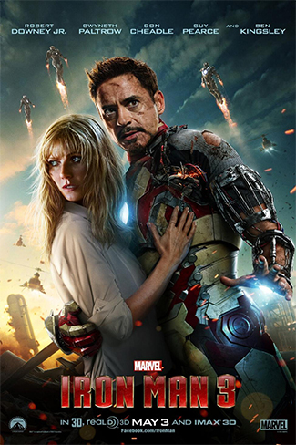

Capitalist Hero

Tony Stark is a self-made man who believes that we all can build ourselves out of trouble. He is America's most eligible bachelors balancing his passion for women with his passion for his inventions. Like Steve Jobs, Tony too locked himself in secret rooms to tackle problems to only emerge later with a paradigm-shifting invention or inventions. To the world,Tony Stark is the hot headed CEO of Stark Enterprises, a company specializing in the creation of high-tech weaponry. Followers of Stark Enterprises knew Tony was secretly Iron Man and that in this identity, he could take care of any domestic or international threat. Iron Man destroyed other like minded competitors battling Stark Enterprises for military defense contracts. Ineffective employees were fired and usually went on to become supervillains. Plus, Iron Man despises Communist.

5